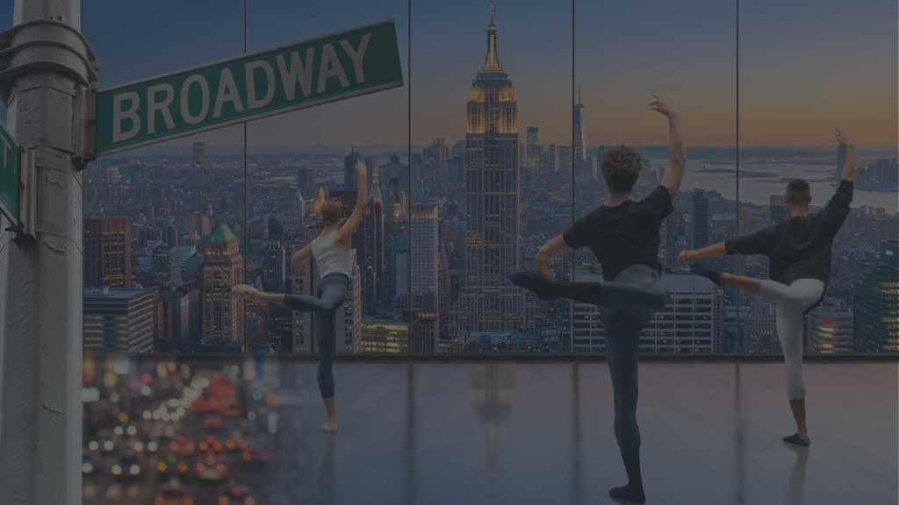
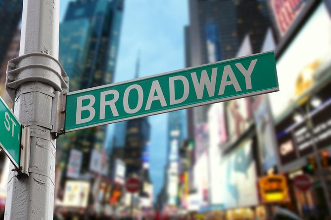
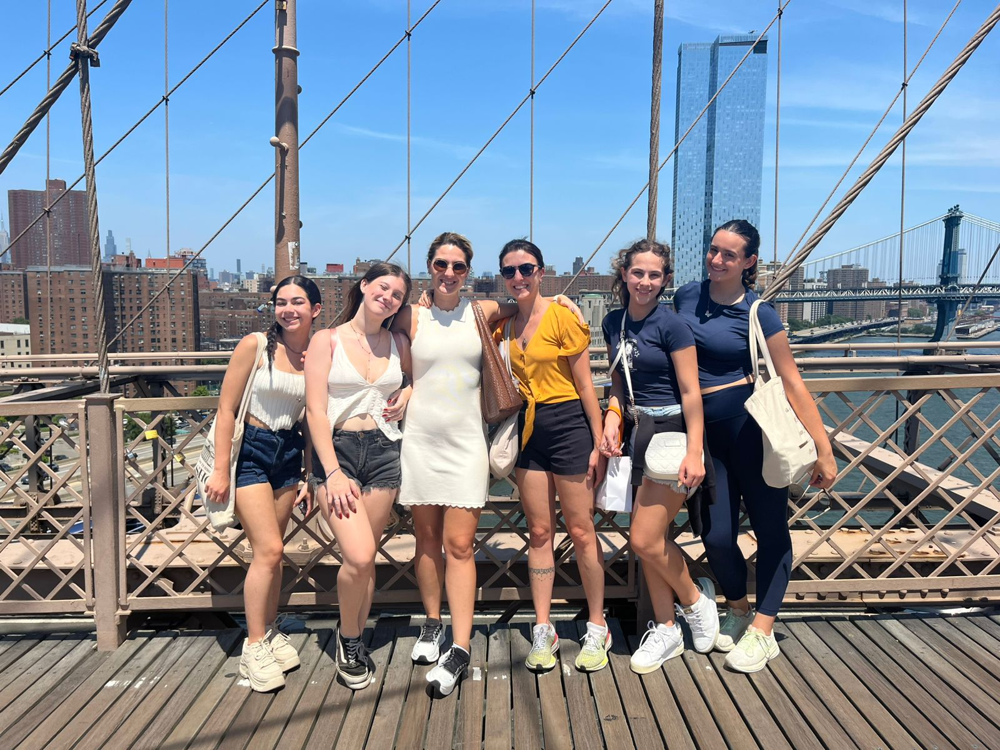
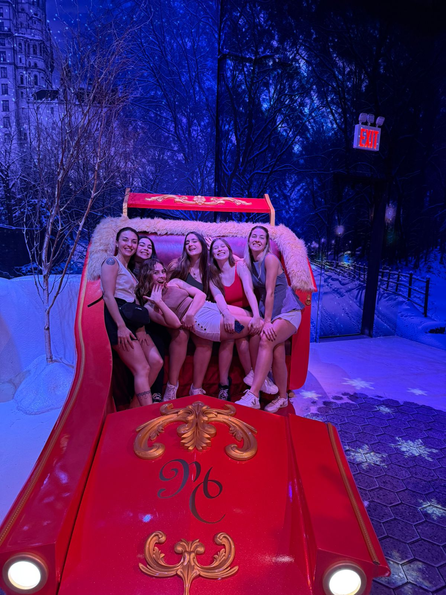
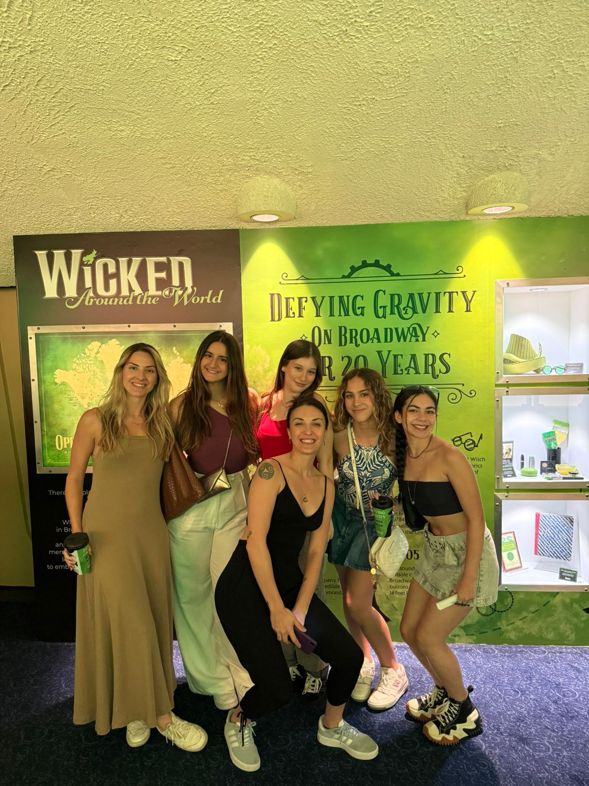
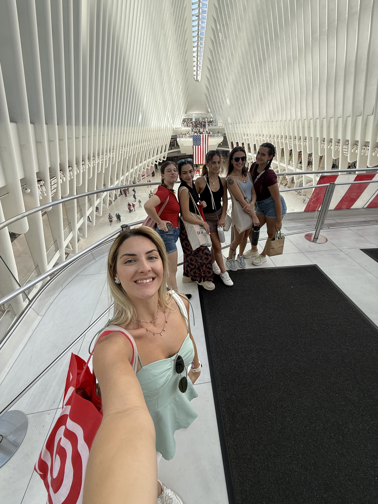
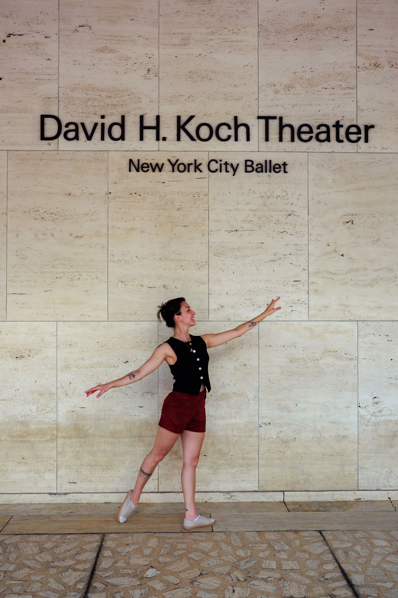
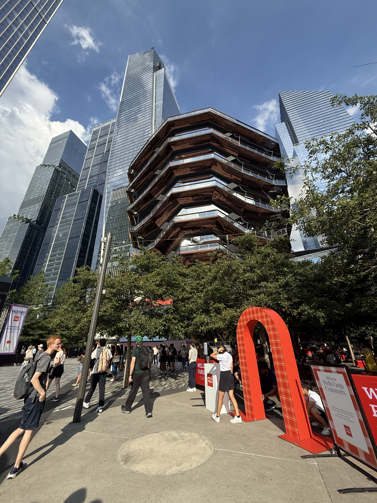

Imagine estudar dança em Nova York. Aprender com grandes mestres, assistir espetáculos icônicos e sentir a energia da cidade que inspira artistas no mundo inteiro. Essa é a Trilha da Dança em NY.
Durante 10 dias inteiros em Julho de 2027, você vai deixar de ser apenas um espectador.
Treinar onde grandes artistas se formam. Assistir espetáculos que fazem história. Sentir a energia da cidade que inspira bailarinos no mundo inteiro. Essa é a experiência da Trilha da Dança em Nova York.
Cada dia em Nova York é uma oportunidade de crescer como bailarino. Entre aulas intensas e a energia artística da cidade, você vive uma experiência que inspira e transforma.
Broadway Dance Center. Steps on Broadway. Você vai compartilhar as barras, os espelhos e a sala com profissionais que fazem a indústria acontecer. O nível de exigência e a energia das aulas em Nova York são inigualáveis.

Lugar garantido para assistir à magnitude das produções na Broadway. Você vai ver ao vivo o que significa dominar a performance de palco, a presença cênica e a precisão coreográfica que define o padrão mundial.

Brooklyn Bridge, Central Park, as ruas cruas de Manhattan. Vamos transformar o tecido urbano de NYC no seu palco pessoal com sessões fotográficas profissionais para registrar a sua arte no coração do mundo.
A organização é surreal. Viver uma imersão técnica deste nível abriu horizontes que eu nem sabia que existiam. Pronta para elevar o nível nestes 10 dias em NY.
Julia TassiMais do que aulas de dança, foi uma mudança de mindset absoluto. Respirar arte intensamente transformou a minha confiança como bailarino para sempre.
Ana Catarina JurgensenSentir a exigência e a energia dos professores internacionais muda a nossa perspectiva. Recomendo de olhos fechados para quem quer evoluir a sério na dança.
Maria Eduarda Xavier






A exclusividade exige limitação. As vagas para os 10 dias de imersão em Nova York (Julho de 2027) são altamente restritas para garantir foco total nos estudos. Cadastre-se agora.